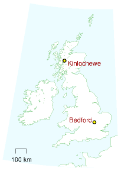
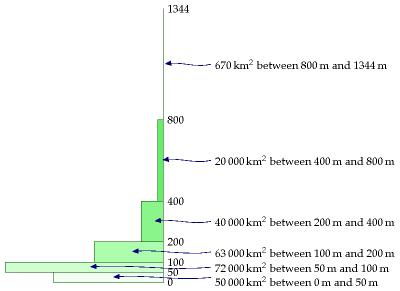
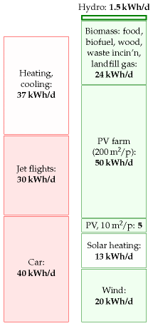
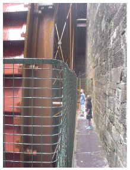

8 Hydroelectricity
(Figure omitted from this edition: third-party rights.)
Figure 8.1. Nant-y-Moch dam, part of a 55 MW hydroelectric scheme in Wales. Photo by Dave Newbould, www.origins-photography.co.uk.
To make hydroelectric power, you need altitude, and you need rainfall. Let’s estimate the total energy of all the rain as it runs down to sea-level.
For this hydroelectric forecast, I’ll divide Britain into two: the lower, dryer bits, which I’ll call “the lowlands;” and the higher, wetter bits, which I’ll call “the highlands.” I’ll choose Bedford and Kinlochewe as my representatives of these two regions.
Let’s do the lowlands first. 1 To estimate the gravitational power of lowland rain, we multiply the rainfall in Bedford (584 mm per year) by the density of water (1000 kg/m3), the strength of gravity (10 m/s2) and the typical lowland altitude above the sea (say 100 m). The power per unit area works out to 0.02 W/m2. That’s the power per unit area of land on which rain falls.

Erratum. Kinlochewe is shown incorrectly. The correct location is about 60km further north.
When we multiply this by the area per person (2700 m2, if the lowlands are equally shared between all 60 million Brits), we find an average raw power of about 1 kWh per day per person. This is the absolute upper limit for lowland hydroelectric power, if every river were dammed and every drop perfectly exploited. Realistically, we will only ever dam rivers with substantial height drops, with catchment areas much smaller than the whole country. Much of the water evaporates before it gets anywhere near a turbine, and no hydroelectric system exploits the full potential energy of the water. We thus arrive at a firm conclusion about lowland water power. People may enjoy making “run-of-the-river” hydro and other small-scale hydroelectric schemes, but such lowland facilities can never deliver more than 1 kWh per day per person.

Figure 8.2. Altitudes of land in Britain. The rectangles show how much land area there is at each height.
Let’s turn to the highlands. Kinlochewe is a rainier spot: it gets 2278 mm per year, four times more than Bedford. The height drops there are bigger too – large areas of land are above 300 m. So overall a twelve-fold increase in power per square metre is plausible for mountainous regions. The raw power per unit area is roughly 0.24 W/m2. 2 If the highlands generously share their hydro-power with the rest of the UK (at 1300 m2 area per person), we find an upper limit of about 7 kWh per day per person. As in the lowlands, this is the upper limit on raw power if evaporation were outlawed and every drop were perfectly exploited.

Figure 8.3. Hydroelectricity.

Figure 8.4. A 60 kW waterwheel.
What should we estimate is the plausible practical limit? Let’s guess 20% of this – 1.4 kWh per day, and round it up a little to allow for production in the lowlands: 1.5 kWh per day.
The actual power from hydroelectricity in the UK today is 0.2 kWh/d per person, 3 so this 1.5 kWh/d per person would require a seven-fold increase in hydroelectric power.
What hydro actually delivers
A section added in the 2026 revision. This is one of the few chapters whose headline number has not moved at all.
Britain’s figure is where MacKay left it
He put British hydroelectricity at 0.2 kWh/d per person and said reaching his 1.5 kWh/d ceiling would need a sevenfold increase. In 2025 the United Kingdom generated 5.1 TWh of hydroelectricity, which across 68.4 million people is 0.20 kWh/d per person.4
Generation itself rose about a third — his 2006 figures come to 3.7 TWh — but the population grew with it, and Glendoe, which he describes as forthcoming, was built and is running. Eighteen years, one new large scheme, and the number per person is unchanged. The sevenfold increase is exactly as far away as it was.
What the resource looks like where it exists
MacKay’s method makes the geography visible in a way that national percentages do not. In 2025:
| Hydroelectricity, kWh/d per person | |
|---|---|
| United Kingdom | 0.20 |
| Sweden | 17.7 |
| Norway | 72.0 |
Norway gets 360 times as much hydroelectricity per person as Britain. That is not policy, effort or virtue. It is rain falling on mountains, which is the quantity this chapter measures, and no amount of ambition will move Britain’s number more than the sevenfold MacKay allows for.
Sweden: the gains come from efficiency now, because the dams are finished
Sweden runs about 1700 hydro plants totalling 16.5 GW, producing roughly 67 TWh a year — 68.3 TWh in 2025. It builds no new large-scale hydro at all. Four rivers are legally protected from development, and the practical position is that the resource is fully taken.
So the only route left is the existing fleet, and a good deal of it is old: many plants are more than forty years old and were permitted long before modern environmental law. A study for the industry by Sweco reckons that refurbishing turbines and generators across the fleet could raise capacity by about 24%, which it likens to three or four nuclear reactors.5
That comparison needs care, and the care is this chapter’s whole method. Twenty-four per cent more capacity is not twenty-four per cent more energy. The rain is unchanged and so is the annual total; what the upgrade buys is the ability to deliver the same water faster when it is wanted. In a system running on wind and solar that is worth a great deal — it is precisely the flexibility chapter 26 and chapter 28a identify as the binding constraint — but it is a different good from the kilowatt-hours this chapter counts, and quoting it in reactor-equivalents invites the confusion MacKay wrote the book to prevent.
And it is being given back at the other end
Running in the opposite direction is a national relicensing programme. In June 2020 the Swedish government decided that every one of those 1700 plants would be reassessed for modern environmental conditions, a process due to finish around 2040. The plan set 1.5 TWh, about 2.3% of national hydro production, as the figure for acceptable lost output — intended in the original decision as a ceiling, and since treated as a reference value rather than a limit, which the industry disputes. Eight of the operators fund a joint environmental fund covering the studies, the permit costs, the compensation for lost production and the cost of removing dams outright.6
The two movements are not the same size, and the difference is instructive. The upgrades add capacity and roughly no energy; the relicensing removes energy and roughly no capacity. Sweden is, deliberately, trading a small amount of annual electricity for river ecology while buying flexibility it will need for the wind.
That is a limit MacKay’s arithmetic cannot see. This chapter derives a ceiling from rainfall and altitude, which is real and binding. Sweden has reached it, and discovered a second one underneath: what a society will actually permit its rivers to be used for. A country can hit the physical limit and then watch it move down.
Is the rain going away?
The obvious worry about a resource made of weather is that the weather is changing. Two mechanisms get raised: drier summers, and the loss of the glaciers that feed Alpine and Nordic rivers. The record so far says the first is violent but not yet directional, and the second is small, real and finite.
Drought moves the number enormously from year to year. In 2022 European hydroelectricity fell to 563 TWh from 654 the year before, a drop of 14%, and the southern falls were far worse: Italy −37%, Spain −41%, France −25%, Switzerland −21%. Then 2024 set a record at 694 TWh, and 2025 came back to 619.7
But there is no decline in the series. Across 1985 to 2025 European hydro trends upward at about 6% a decade, and British hydro likewise. Decade means for Europe run 553, 578, 630, 638 TWh; for Britain 4.7, 4.7, 5.4, 5.6 TWh. Most of that rise is plant being added rather than rain increasing, and the flattening between the 2010s and 2020s is the only hint of anything. Against a standard deviation of about 8% year to year, it is not yet a signal.
The glacier effect is the one worth naming, because it is hidden. Since 1980, between 3 and 4% of Swiss hydroelectricity has come directly from net glacier mass loss — from ice being spent rather than from that year’s precipitation. That is not renewable in the sense the rest of this chapter uses. It is a stock being drawn down, and it appears in the statistics as though it were a flow.
The quantity is small. Swiss studies put the eventual annual loss at roughly 1 TWh, about 2.5% of the country’s hydro, with the glacier contribution fading substantially between 2040 and 2060 as Alpine ice volume falls by about a third by 2050.8
The seasonal shift matters more than the annual total, and that is the part this book’s method should flag. Melt arrives earlier, so spring runoff rises and late-summer runoff falls — Swiss summer hydro production is projected to fall by more than half by the end of the century, while winter output rises. The annual kilowatt-hours barely move; when they arrive moves a great deal. A reservoir can absorb some of that and a run-of-river plant cannot absorb any of it.
For MacKay’s balance sheet the annual figure survives. For the argument in chapters 26 and 28a it does not, because hydro’s growing value is precisely its ability to deliver on demand, and a resource whose runoff is shifting away from the season of lowest rivers and highest cooling load is becoming a slightly less reliable form of that.
Notes and further reading
Rainfall statistics are from the BBC weather centre.↩︎
The raw power per unit area [of Highland rain] is roughly 0.24 W/m2. We can check this estimate against the actual power density of the Loch Sloy hydro-electric scheme, completed in 1950 (Ross, 2008). The catchment area of Loch Sloy is about 83 km2; the rainfall there is about 2900 mm per year (a bit higher than the 2278 mm/y of Kinlochewe); and the electricity output in 2006 was 142 GWh per year, which corresponds to a power density of 0.2W per m2 of catchment area. Loch Sloy’s surface area is about 1.5 km2, so the hydroelectric facility itself has a power per unit lake area of 11 W/m2. So the hillsides, aqueducts, and tunnels bringing water to Loch Sloy act like a 55-fold power concentrator.↩︎
The actual power from hydroelectricity in the UK today is 0.2 kWh per day per person. Source: MacLeay et al. (2007). In 2006, large-scale hydro produced 3515 GWh (from plant with a capacity of 1.37 GW); small-scale hydro, 212 GWh (0.01 kWh/d/p) (from a capacity of 153 MW). In 1943, when the growth of hydroelectricity was in full swing, the North of Scotland Hydroelectricity Board’s engineers estimated that the Highlands of Scotland could produce 6.3 TWh per year in 102 facilities – that would correspond to 0.3 kWh/d per person in the UK (Ross, 2008). Glendoe, the first new large-scale hydroelectric project in the UK since 1957, will add capacity of 100 MW and is expected to deliver 180 GWh per year. Glendoe’s catchment area is 75 km2, so its power density works out to 0.27 W per m2 of catchment area. Glendoe has been billed as “big enough to power Glasgow.” But if we share its 180 GWh per year across the population of Glasgow (616 000 people), we get only 0.8 kWh/d per person. That is just 5% of the average electricity consumption of 17 kWh/d per person. The 20fold exaggeration is achieved by focusing on Glendoe’s peak output rather than its average, which is 5 times smaller; and by discussing “homes” rather than the total electrical power of Glasgow (see p329).↩︎
Generation from the Energy Institute’s Statistical Review of World Energy 2026: United Kingdom 5.1 TWh, Sweden 68.3 TWh, Norway 145.1 TWh in 2025. Per-person figures use 2023 populations from Our World in Data — 68.4 million, 10.6 million and 5.5 million — so they are marginally high for 2025 in each case, by well under the precision quoted. MacKay’s own 2006 figures, 3515 GWh large-scale plus 212 GWh small-scale, come to 3.7 TWh, which over the 60 million population he uses is 0.17 kWh/d; he quotes 0.2. Note that the Statistical Review’s hydro series excludes pumped storage where it can be separated, since that is a store rather than a source.↩︎
Swedish figures from the Energy Agency (Energimyndigheten) and Svenska kraftnät: about 1700 hydro plants, roughly 16.5 GW installed and about 67 TWh a year, with no new large-scale development and the emphasis on environmental adaptation, efficiency and expansion of existing sites. The 24% capacity-uprating potential is from a study by the consultancy Sweco commissioned within the industry, and is a capacity figure, not an energy one; the “three to four nuclear reactors” comparison is likewise capacity, and reactors and hydro turbines have very different capacity factors, so the equivalence holds only for peak output. The national plan for modern environmental conditions was decided on 25 June 2020, with reassessment of the whole fleet due to complete around 2040 and a national figure of 1.5 TWh — about 2.3% of production — for acceptable production loss; whether that is a ceiling or a reference value is contested between the government’s 2020 decision and later practice, and the process was restarted under new rules in 2025. The environmental fund is financed by eight operators including Vattenfall and Uniper.↩︎
Swedish figures from the Energy Agency (Energimyndigheten) and Svenska kraftnät: about 1700 hydro plants, roughly 16.5 GW installed and about 67 TWh a year, with no new large-scale development and the emphasis on environmental adaptation, efficiency and expansion of existing sites. The 24% capacity-uprating potential is from a study by the consultancy Sweco commissioned within the industry, and is a capacity figure, not an energy one; the “three to four nuclear reactors” comparison is likewise capacity, and reactors and hydro turbines have very different capacity factors, so the equivalence holds only for peak output. The national plan for modern environmental conditions was decided on 25 June 2020, with reassessment of the whole fleet due to complete around 2040 and a national figure of 1.5 TWh — about 2.3% of production — for acceptable production loss; whether that is a ceiling or a reference value is contested between the government’s 2020 decision and later practice, and the process was restarted under new rules in 2025. The environmental fund is financed by eight operators including Vattenfall and Uniper.↩︎
Generation from the Energy Institute’s Statistical Review of World Energy 2026. Total Europe: 653.9 TWh in 2021, 563.0 in 2022, 640.3 in 2023, 693.7 in 2024, 618.6 in 2025. Trends are ordinary least squares on 1985–2025 annual generation, +3.6 TWh/year for Europe and +0.03 for the United Kingdom, both around +6% of the mean per decade; the standard deviation of annual European output over the period is 52 TWh, about 8% of the mean. Because the series is generation and not resource, it mixes weather with capacity added over forty years, so the upward trend should not be read as rainfall increasing. Separating the two would need a capacity series, which this workbook does not carry.↩︎
Estimates for the glacier contribution to Swiss hydropower are from the research summarised by the Swiss National Science Foundation and the associated literature on glacier retreat and hydropower: 3.0–4.0% of country-scale production supplied directly by net glacier mass loss since 1980, that share reducing substantially by 2040–2060, and an eventual annual loss of roughly 1 TWh, about 2.5% of hydro production under the Energy Strategy 2050. Alpine glaciers are projected to lose about 34% of volume and 32% of area by 2050. Individual reservoirs vary widely — one large Swiss scheme is estimated to lose up to 27% of production by 2050 — so the national average conceals a wide spread. The seasonal projections, summer production falling by more than half by 2100 with winter rising, are model results under warming scenarios and carry the uncertainty of those scenarios.↩︎